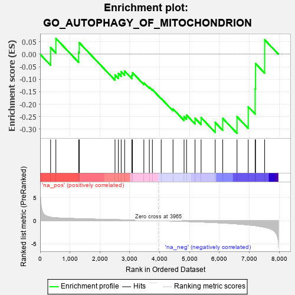
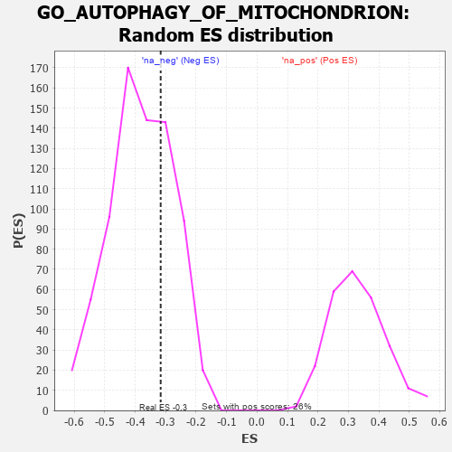

| | | Dataset | 7d |
| Phenotype | NoPhenotypeAvailable |
| Upregulated in class | na_neg |
| GeneSet | GO_AUTOPHAGY_OF_MITOCHONDRION |
| Enrichment Score (ES) | -0.31652695 |
| Normalized Enrichment Score (NES) | -0.8330485 |
| Nominal p-value | 0.6981132 |
| FDR q-value | 0.98047113 |
| FWER p-Value | 1.0 |
Table: GSEA Results Summary

Fig 1: Enrichment plot: GO_AUTOPHAGY_OF_MITOCHONDRION
Profile of the Running ES Score & Positions of GeneSet Members on the Rank Ordered List
| PROBE | GENE SYMBOL | GENE_TITLE | RANK IN GENE LIST | RANK METRIC SCORE | RUNNING ES | CORE ENRICHMENT | | 1 | GSK3A | | | 351 | 0.745 | 0.0264 | No |
| 2 | HTRA2 | | | 527 | 0.621 | 0.0632 | No |
| 3 | PARL | | | 1290 | 0.432 | 0.0082 | No |
| 4 | ATG12 | | | 1310 | 0.427 | 0.0462 | No |
| 5 | HUWE1 | | | 2506 | 0.225 | -0.0828 | No |
| 6 | WIPI2 | | | 2618 | 0.210 | -0.0769 | No |
| 7 | PHB2 | | | 2712 | 0.197 | -0.0700 | No |
| 8 | BECN1 | | | 2828 | 0.179 | -0.0675 | No |
| 9 | ATG9A | | | 3069 | 0.141 | -0.0843 | No |
| 10 | TIGAR | | | 3091 | 0.138 | -0.0739 | No |
| 11 | ATG3 | | | 3471 | 0.081 | -0.1139 | No |
| 12 | FIS1 | | | 3654 | 0.051 | -0.1321 | No |
| 13 | ATG2B | | | 3756 | 0.033 | -0.1417 | No |
| 14 | ATG5 | | | 4051 | -0.016 | -0.1772 | No |
| 15 | CDC37 | | | 4446 | -0.084 | -0.2188 | No |
| 16 | FBXW7 | | | 4816 | -0.161 | -0.2499 | No |
| 17 | MARK2 | | | 4899 | -0.177 | -0.2435 | No |
| 18 | HDAC6 | | | 5183 | -0.244 | -0.2559 | No |
| 19 | FZD5 | | | 5386 | -0.292 | -0.2536 | No |
| 20 | ATG7 | | | 5858 | -0.420 | -0.2731 | Yes |
| 21 | ATG13 | | | 6110 | -0.508 | -0.2565 | Yes |
| 22 | RNF41 | | | 6588 | -0.703 | -0.2499 | Yes |
| 23 | DNM1L | | | 6963 | -0.913 | -0.2104 | Yes |
| 24 | TSPO | | | 7194 | -1.065 | -0.1384 | Yes |
| 25 | MFN2 | | | 7208 | -1.081 | -0.0376 | Yes |
| 26 | VDAC1 | | | 7512 | -1.409 | 0.0578 | Yes |
Table: GSEA details [plain text format]

Fig 2: GO_AUTOPHAGY_OF_MITOCHONDRION: Random ES distribution
Gene set null distribution of ES for GO_AUTOPHAGY_OF_MITOCHONDRION